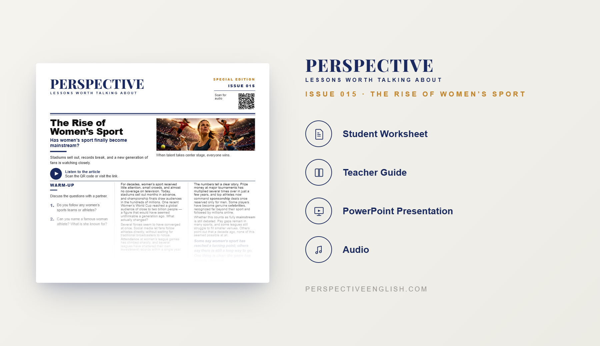

ISSUE 015
The Rise of Women’s Sport
Has women’s sport finally become mainstream?
A ready-to-teach English lesson exploring the growing popularity of women’s sport, changing audiences, increased investment, and whether the game has finally reached a turning point.
Collection 02 includes Issues 011–015.
LESSON PREVIEW

ABOUT THIS LESSON
For decades, women’s sport received limited attention, smaller crowds, and far less coverage than men’s sport.
This magazine-style English lesson explores how social media, investment, sponsorship, and a new generation of athletes and fans have helped transform women’s sport.
Students read an original article, learn useful vocabulary, and take part in discussion, critical thinking, speaking, and writing activities about sport, equality, media coverage, investment, and changing attitudes.
FROM THE ARTICLE
WHAT'S INCLUDED
- Magazine-style student worksheet
- Original article and audio recording
- Vocabulary and reading activities
- Discussion and critical-thinking tasks
- Speaking challenge and writing prompt
- Teacher guide and complete answer key
- Classroom presentation
GET THE COMPLETE LESSON
Ready to teach The Rise of Women’s Sport?
Purchase this lesson individually or save with Perspective Collection 02.
Secure checkout and instant digital delivery through Payhip.